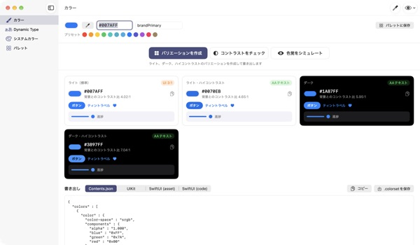
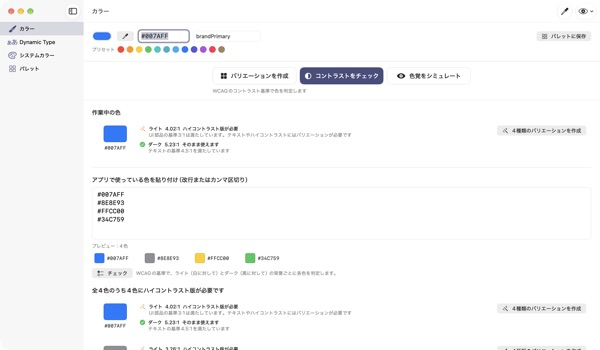
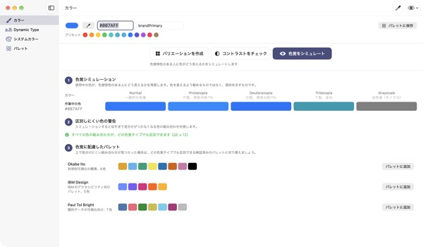
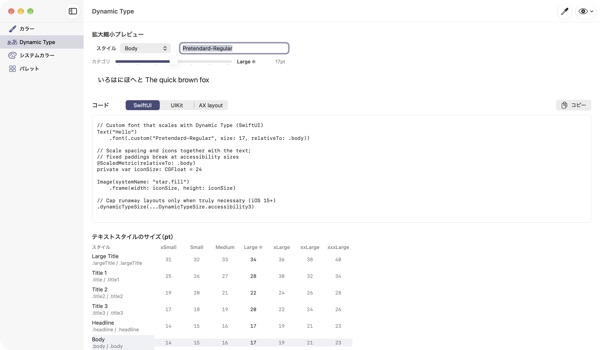

1色入れれば
4つのモードがそろう
システムカラーはダークモードや「コントラストを上げる」に合わせて自動で変わりますが、ブランドカラーはそのままです。TetraTintはライトモードの1色から、ライト、ライト・ハイコントラスト、ダーク、ダーク・ハイコントラストを作り、そのままXcodeへ書き出します。
すべての機能が無料。macOS 14以降に対応。

ブランドカラーを入れてみる
hexを貼り付けるか、プリセットを押してみてください。アプリと同じ計算で、4つのバリエーションと背景とのコントラストがすぐに出ます。
ダークモードでブランドカラーが沈んで見えたことは？
ライトモードで選んだ青が黒い背景ではくすんで見え、「コントラストを上げる」を使う人には文字が読みづらくなります。モードごとに色を手で探し、コントラスト比を1つずつ測っていると半日がかりです。TetraTintはシステムカラーがモードごとに変わる仕組みにならって色を作り、それぞれが基準を満たすかをその場で見せます。
使っている色をまとめてチェック
アプリで使っているhexの一覧をまるごと貼り付けると、色ごとに「そのまま使えます」「ハイコントラスト版が必要」「装飾用のみ」を判定します。
問題のある色はワンクリックで4つのバリエーションにしてパレットに保存できます。App Storeのアクセシビリティ表示「十分なコントラスト」の準備にも使えます。

色覚の違いを体験できる
パレットがP型、D型、T型の色覚やグレイスケールでどう見えるかを再現し、見分けにくくなる色の組み合わせを警告します。
Okabe–Ito、IBM、Paul Tolのカラーユニバーサルなパレットをワンクリックで読み込めるほか、右上の目のボタンでアプリ画面全体をその見え方でプレビューできます。

カスタムフォントも文字サイズに追従
11のテキストスタイルと7段階のサイズを一覧で確認し、スライダーで段階を変えながら実際の大きさをプレビューできます。
フォントのPostScript名を入れると、UIKit、SwiftUI、@ScaledMetricのコードと、大きな文字でレイアウトを切り替えるコードを生成します。

はじめ方は3ステップ
- 1
基準色を入れる
hexを貼り付けるか、画面のどこからでもスポイトで取るか、プリセットを選びます。
- 2
4つのバリエーションを確かめる
バッジでコントラストを確認し、ブランドに合わない色はカラーピッカーで整えます。
- 3
Xcodeへ書き出す
Contents.json、.colorset、UIKitやSwiftUIのコードとしてコピーまたは保存します。
バリエーションの作り方とバッジの意味
- ライト（標準）
- 入力した色そのまま
- ライト・ハイコントラスト
- 彩度を少し上げ、白背景で4.5:1になるまで暗く
- ダーク
- 少し明るく鮮やかに（明度+5、彩度+3）
- ダーク・ハイコントラスト
- 黒背景で7:1になるまで明るく
- AAテキスト
- 背景とのコントラスト比4.5:1以上。本文の文字に使えます
- UI 3:1
- 3:1以上。ボタンやアイコンには使えますが、文字には足りません
- 低い
- 3:1未満。文字、アイコン、状態表示には使いません
- 書き出し
- Contents.json · .colorset · UIKit · SwiftUI、パレット全体は1つの.xcassetsに
システムカラーの参考値はAppleのヒューマンインターフェイスガイドラインに基づいており、OSのアップデートで変わることがあります。実際のアプリではシステムカラーのAPIを使ってください。
よくある質問
本当に無料ですか？
はい。すべての機能が無料で、アカウントも広告もありません。役に立ったら設定からチップを送れますが、チップで使えるようになる機能はありません。
自動で作られた色がブランドのトーンに合いません。
各カードのカラーピッカーで1つずつ調整できます。「すべて再生成」を押すと、手動の調整を破棄して基準色から作り直します。
バリエーションはどんな基準で作られますか？
Appleのシステムカラーがモードごとに変わる実際のパターンにならっています。ダークでは少し明るく鮮やかに、ライト・ハイコントラストは白背景で4.5:1、ダーク・ハイコントラストは黒背景で7:1を超えるように調整します。
色覚シミュレーションの警告はどういう意味ですか？
その見え方で2色の差（ΔE）が12を下回り、見分けにくくなる組み合わせという意味です。色だけで状態を伝えず、アイコン、模様、ラベルを添えるか、カラーユニバーサルなパレットに切り替えてください。
カスタムフォントをDynamic Typeに対応させるには？
Dynamic Typeの画面でフォントのPostScript名を入れ、スタイルを選ぶとUIKit、SwiftUI、@ScaledMetricのコードが出ます。アクセシビリティサイズではBodyが標準の3倍以上になるので、固定の高さやlineLimit(1)は避けてください。
書き出した色が、アプリ内のシステムカラーと違って見えます。
システムカラーの参考値はヒューマンインターフェイスガイドラインの資料に基づいており、OSのリリースごとに変わることがあります。システムカラーには常にUIColorやColorのAPIを使ってください。
保存したパレットはどこにありますか？
このMacの中だけに保存されます。クラウドへの同期や送信はしません。詳しくはプライバシーポリシーをご覧ください。
スポイトで取った色は保存されますか？
いいえ。指した位置の色の値だけを読み取って作業中の色にします。画面の画像は保存も送信もしません。
どのMacで使えますか？
macOS 14（Sonoma）以降で動作します。書き出すときは、保存先をご自身で選びます。
不具合の報告、機能のご要望、ご質問はleeo@kakao.comまでお送りください。通常2〜3日以内にお返事します。